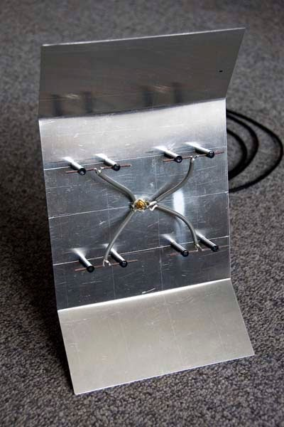
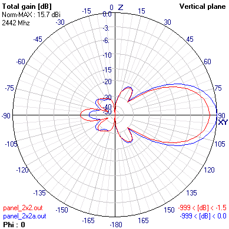
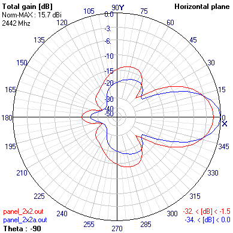

14 dBi (15.7 dBi) panel antenna
This antenna consists of array of 4 dipoles over the aluminium reflector. Most
commercial panel antennas are microstrip patch antennas. See this photo for example. NEC2 is not suitable for simulating of such
antennas. Zeland
software's IE3D full-wave electromagnetic simulator is ideal for the design
and simulation of patch antennas.

Figure 1 - Panel antenna
Beda Hammerschmied sent me the photo of the panel antenna he constructed (see
figure 1) using my design. He reports 14 dBm improvement over DI-524 2 dBi
dipole.
- Frequency range: 2412 - 2472 MHz
- Physical dimensions reflector plate: 185mm x 185mm (352 mm x 185 mm) (heigth = 30 mm without side reflector or 49 mm with side reflectors)
- Gain: 14 dBi(15.7 dBi with 83.5 mm (0.68 wavelength)side reflector on both side at angle of 36 degrees)
- Front to back ratio: 18 dB
- Half power beamwidth: 40 degrees H-plane & 14 dBi gain(30 degrees with side reflectors & 15.7 dBi gain), 30 degrees E-plane
- SWR < 1.3 (in practice adjust array height over reflector (default height = 27 mm or 0.22 wavelength)
- Main reflector size = 184.20 x 184.20 mm (1.5 wavelength)
- Side reflectors size = 184.20 (1.5 wavelength) x 83.5 mm (0.68 wavelength)
- Dipole wire guage 14 AWG (1.6 mm or 0.006 wavelength)
- Total length of each dipole = 61.4 mm (0.5 wavelength)
- Distance between dipole vertically (center to center) and horizontally = 93.30 mm (0.76 wavelength)
- Total antenna height 49 mm (0.4 wavelength) with side reflectors
- 4NEC2 input file: panel_2x2.nec.txt
Schematics of the antenna - drawing by Dave Carpenter.
N-Type connector is in the middle of reflector. 4 equal length coax cables are
soldered to connector - coax core to connector core, shield to connector outer.
The cheap RG-58/U coax can be used. Solder a dipole on each coax's other end -
coax core to dipole's upper arm, shield to lower arm. Dipoles then can be fixed
in place with some posts and glue.
Two side reflectors can be added for additional 1.5 dB gain -
panel_2x2a.nec.txt. Azimuth half power beamwidth then becomes 30
degrees.

Figure 2 - Elevation pattern

Figure 3 - Azimuth pattern
| {kind=link}
{kind=link}